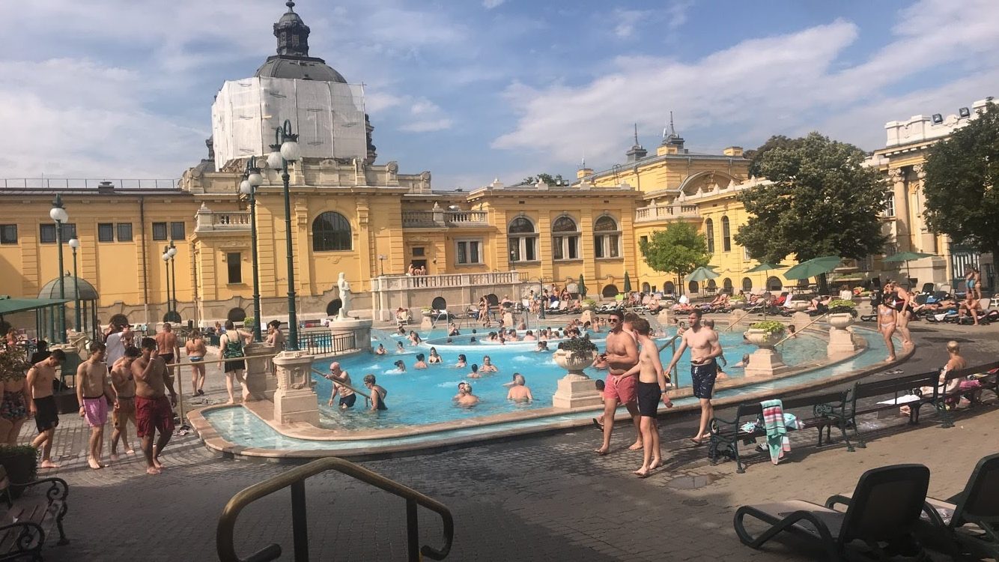
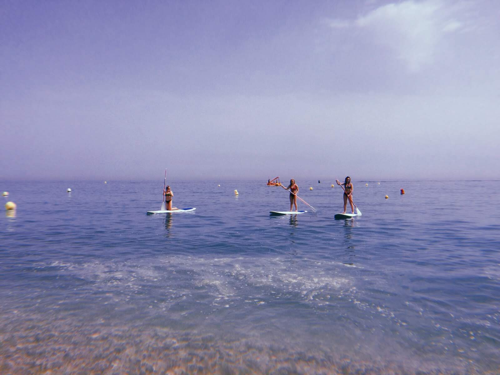
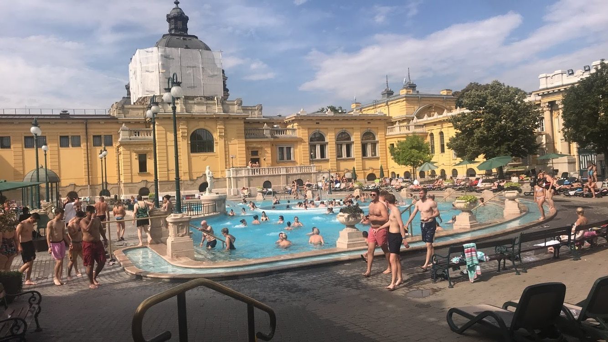
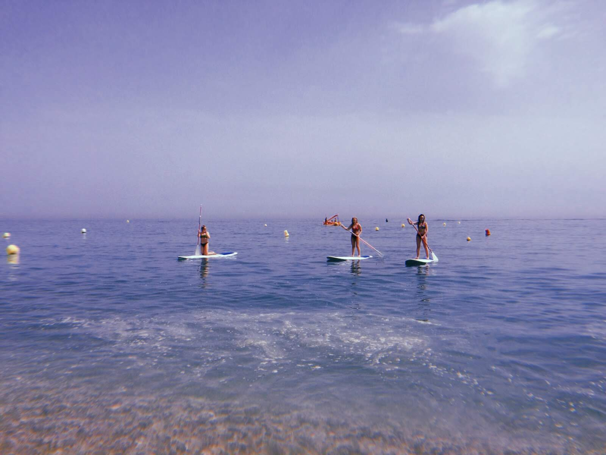

If there is one holiday that I believe everyone should experience in their lifetime it would be to go inter railing around Europe. On the 28th of June 2018, six days after I had finished my Leaving Cert, five of my closest friends and I flew to Amsterdam in the Netherlands to begin our four-week journey.
We then travelled to Split in Croatia on a five-hour train from Budapest where we spent six days on the beach recovering in the sun from the hectic cities. I must admit we did cheat slightly by flying from Split to Marbella where we enjoyed our last two weeks with our friend’s family.
 



The highlight of the trip was definitely attending the Balaton Sound concert on Lake Balaton in Budapest. The six of us camped for two days in two, 2 man tents. It was a squash but definitely worth it.During the day we swam in the lake and at night we attended concerts. We saw David Guetta, Martin Garrix and many more.
The hardest part of the trip was missing our very first train from Amsterdam to Berlin and getting stranded on the border between The Netherlands and Germany overnight. We were unable to find accomadation in the small town of Venlo so ended up in a pub drinking tea until 5am where the owner kindly stayed open for us!!